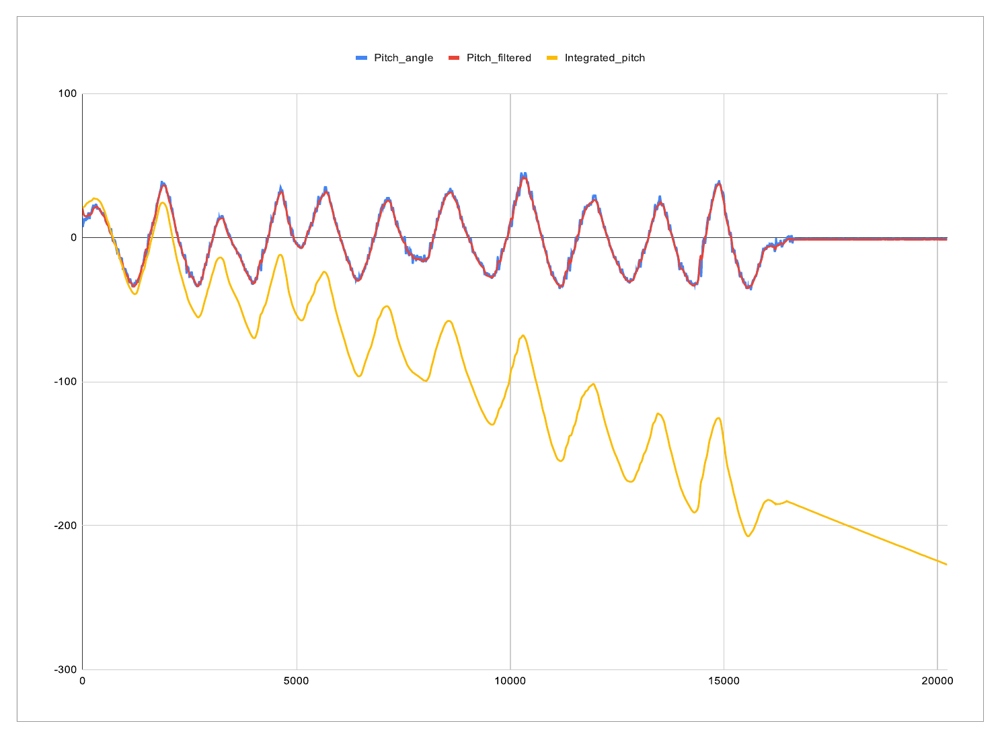
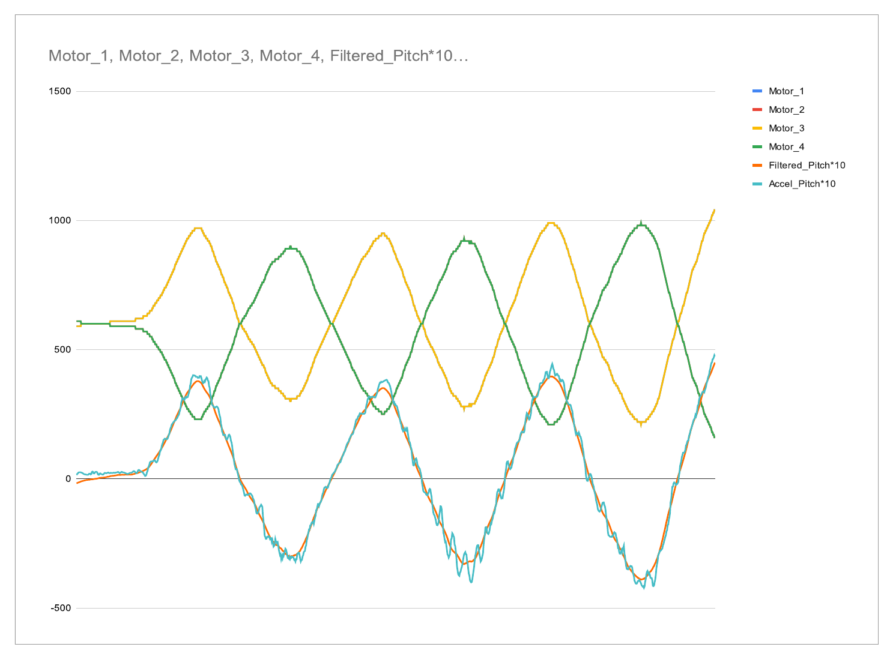
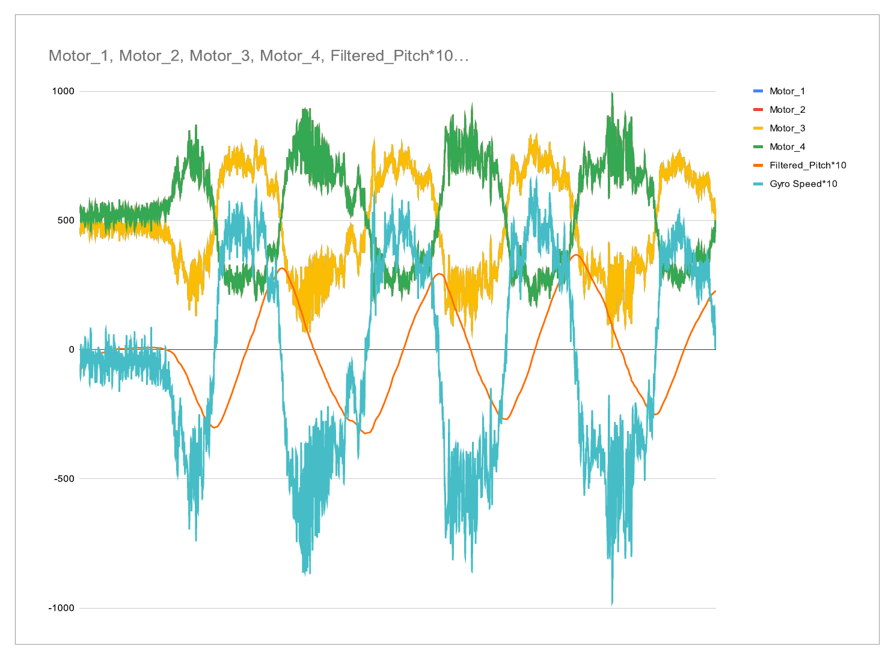
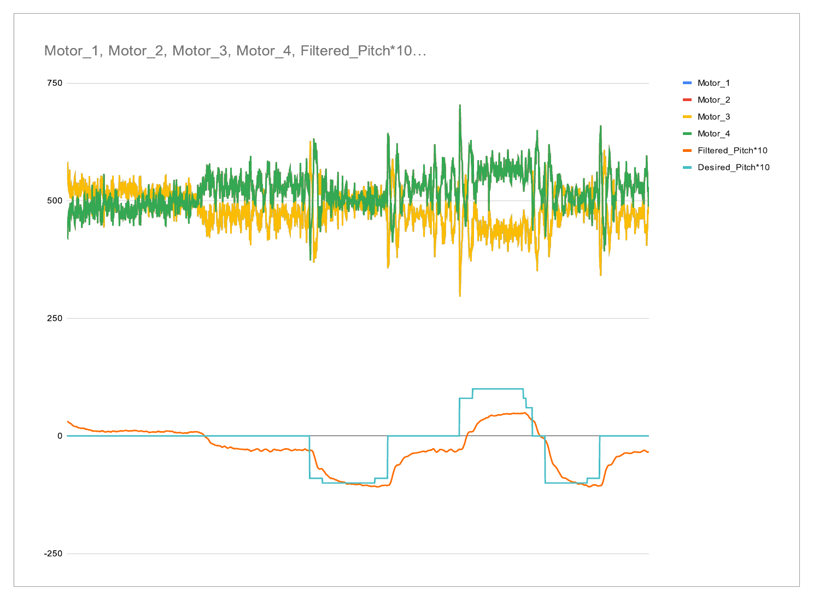
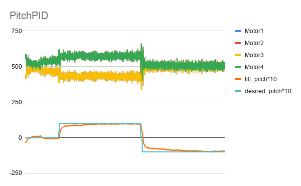

"Our code was right. Our data was clean. And then it had to fly."
Goal
Build a quadrotor from bare parts and write every layer of its flight software — raw IMU registers to camera-based autonomous position hold.
Role
Controls & embedded software; two-person team with Michael Bayer.
Skills
Outcome
Manual stabilized flight and camera-based X/Y/Z + yaw autonomy working; reached genuine autonomous flight, not fully fine-tuned before the 10-week quarter ended.
Ten weeks from a bare Raspberry Pi and an IMU to a quadrotor that holds its own position from an overhead camera. Michael and I built every layer by hand — sensor fusion, PID loops for pitch, roll, and yaw, and camera feedback on top. Here's the build, told through the data.

Sensing before controlling
You can't hold an angle you can't measure. A complementary filter fuses the noisy
accelerometer with the drifting gyro into one clean signal —
roll_filtered = ALPHA·roll_angle + (1−ALPHA)·(gyro_roll_dt + roll_filtered),
with ALPHA = 0.02 (98% gyro).

P — the restoring force
The harder the frame tilts, the harder it torques back:
thrust ± PITCH_P_GAIN·(pitch_desired − filtered_pitch), split across the
four motors. I tuned the gain from 3 up to 6. Pure P chases every move — but with no
damping, it overshoots and rings.

D — the damper (and a noise problem)
Derivative control brakes against rotation speed (the Y-axis gyro). But at
ALPHA = 0.02 the estimate is 98% gyro, so any real D gain fed sensor noise
straight through as high-frequency motor jitter. I pulled D back and pushed P higher instead.

P and D together — tracking
With P restoring and a modest D damping it, the loop finally tracked commanded pitch steps cleanly — no ringing, just a slight offset still left to fix.

I — closing the last gap
Integral control accumulates error over time to erase that leftover offset — clamped to
±I_SATURATE against windup. Combined as thrust ± P ± D ± I, the
pitch axis became fast, damped, and dead-on.